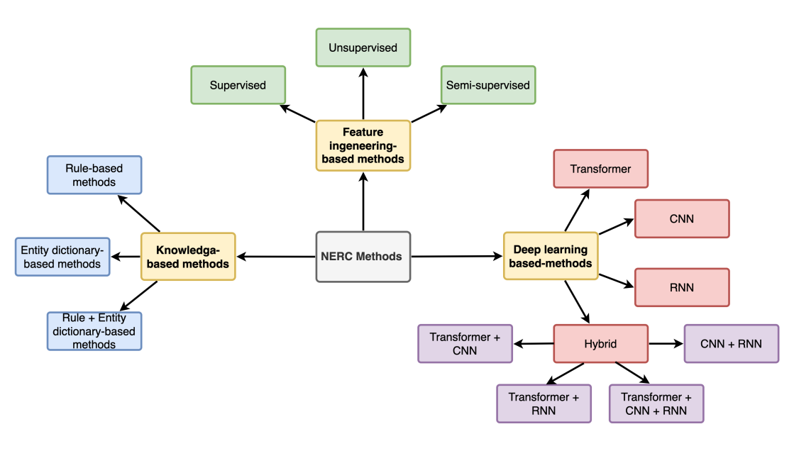
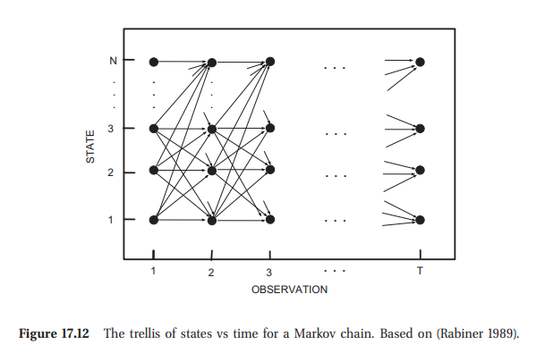

Fast Text Tagging with Conditional Random Fields
2024-09-05
Code” pot at
UniversityThe price of the [Pizza Margherita] is [10 dollars].
FOOD AMOUNTJim worked at Acme Corp. near the beautiful London Bridge.
PER O O ORG ORG O O O LOC LOC EOSJim worked at Acme Corp. near the beautiful London Bridge.
NOUN VERB PREP NOUN NOUN PREP DET ADJ NOUN NOUN EOS\[\begin{aligned} \text{Labels}:\quad \mathbf{y} &= \{y_1, y_2, \ldots, y_T\}\\ \text{Features}:\quad \mathbf{x} &= \{\mathbf{x}_1, \mathbf{x}_2, \ldots, \mathbf{x}_T\} \end{aligned}\]
%%{init: {'theme': 'forest'}}%%
timeline
section 1950-1990
Knowledge-Based Methods
1950s : 1954 IBM-Georgetown machine translation - Sixty Russian sentences translated into English
1960s : Slow progress in machine translation
: 1966 ALPAC report leads to defunding of machine translation in the US
1974-1980 : First AI Winter
section 1990-2000
Statistical Feature-Engineered Methods
Markov models
: 1988 First papers using Markov models for PoS tagging
: 1996 Maximum Entropy Markov Model (MEMM) published
: 2001 Conditional Random Fields (CRF) introduced
Data
: 1993 Penn Treebank Project - 1 mio tokens from WSJ
section "2010-today
Deep Learning-Based Methods"
Emnbeddings and RNN's
: 2013 Word Embeddings (Word2Vec, GloVe)
: 2015 Neural Net Revolution (BiLSTM-CRF)
Transformers
: 2017 "Attention is all you need"
Introduction of the Transformer model
: 2020 Large-Scale Pre-trained Language Models (GPT-3)
LLM
: 2022 LLM's GPT 3.5 and ChatGPT
: 2023 LLM zoo and Few-Shot Adaptation
Abstract tasks have taken over lower level tasks
1 Source: https://paperswithcode.com/datasets

import re
import datasets
import sklearn_crfsuite
from sklearn_crfsuite import metrics
def tokens_to_features(tokens, i):
features = {
"bias": 1.0,
"word": tokens[i].lower(),
"prev_word": tokens[i - 1] if i>0 else "BOS",
"next_word": tokens[i + 1] if i>len(tokens) else "EOS",
"shape": re.sub(r"\d", "X", tokens[i]),
}
return features
# tokens
["Anders", "loves", "pizza", "from", "Rome"]# features i=2
{"bias":1.0, "word": "pizza", "prev_word": "loves", "next_word": "from", "shape": "pizza"}def load_X_y(dataset_id="eriktks/conll2003", split="train"):
data = datasets.load_dataset(dataset_id)
sentences = data[split]["tokens"]
labels = data[split]["ner_tags"]
label_names = data[split].features["ner_tags"].feature.names
X, y = [], []
for sentence, label_seq in zip(sentences, labels):
X.append([tokens_to_features(sentence, i) for i in range(len(sentence))])
y.append([label_names[label_id] for label_id in label_seq])
return X, y
X = [
[{"bias": 1.0, "word": "Anders", ...},..., {"bias": 1.0, "word": "Rome", ...}],
...
]
y = [
["PER", ..., "LOC"],
...
]
X, y = load_X_y(split="train")
crf = sklearn_crfsuite.CRF(
algorithm="lbfgs",
c1=0.5,
c2=0.01,
all_possible_states=True,
all_possible_transitions=True,
max_iterations=100,
verbose=True
)
crf.fit(X, y)
Iter 1 time=0.20 loss=221774.8 active=177764 feature_norm=1.00
Iter 2 time=0.11 loss=207529.7 active=153314 feature_norm=2.91
Iter 3 time=0.12 loss=172616.6 active=118451 feature_norm=2.39
...
Iter 100 time=0.12 loss=20369.2 active=24307 feature_norm=224.15
Total seconds required for training: 12.497Number of active features: 24307 (574200)
Number of active attributes: 17166 (63791)
Number of active labels: 9 (9)# Worst case (all_possible_states=True and all_possible_transitions=True)
features = (number of attributes * number of labels)
+ (number of labels * number of labels)X_test, y_test = load_X_y(split="test")
y_pred = crf.predict(X_test)
print(metrics.flat_classification_report(y_test, y_pred, labels=label_names))
precision recall f1-score support
B-ORG 0.89 0.57 0.69 1661
I-MISC 0.74 0.62 0.67 216
B-LOC 0.89 0.80 0.85 1668
B-PER 0.90 0.56 0.69 1617
I-ORG 0.80 0.65 0.72 835
I-LOC 0.79 0.69 0.74 257
I-PER 0.89 0.68 0.77 1156
B-MISC 0.86 0.68 0.76 702
micro avg 0.87 0.66 0.75 8112
macro avg 0.84 0.66 0.74 8112
weighted avg 0.87 0.66 0.74 8112\[ p(x_1,x_2,x_3) = p(x_1) \, p(x_2 | x_1) \, p(x_3 | x_1, x_2) \]
word\[ \ell(\theta) = \sum_{t=1}^{T} \log p\left(\mathbf{y}_t \mid \mathbf{x}_t ; \theta\right) + c_1 \lVert \theta \rVert_1 + c_2 \lVert \theta \rVert_2 \]
| Framework | Algorithm | CoNLL-2003 | FIN | BioNLP2004 | BC5CDR | MultiCoNER |
|---|---|---|---|---|---|---|
| GliNER | 92.60 | - | 88.70 | - | ||
| Apache OpenNLP | Maximum Entropy | 80.00 | 63.24 | - | - | - |
| Stanford CoreNLP | CRF | 85.18 | 55.25 | 73.26 | 85.22 | 19.39 |
| Flair | LSTM-CRF | 90.35 | 74.23 | 71.64 | 90.27 | 56.27 |
| spaCy | CNN-large | 85.64 | 54.71 | 66.17 | 79.66 | 35.82 |
| Hugging Face | roberta-base | 89.92 | 63.18 | 66.56 | 87.08 | 55.21 |
| Hugging Face | bert-base-cased | 90.09 | 39.53 | 69.46 | 85.14 | 56.64 |
| OpenAI | GPT-4 | 62.74 | 36.70 | 41.32 | 55.67 | 33.61 |
Source: Keraghel, Morbieu, and Nadif (2024)
\(f(n) = O(n)\) \(\\[10pt]\) \(\text{if} \quad f(n) \leq C\cdot n \qquad \text{for all} \quad n>n_0.\)

| Model | Time per token |
|---|---|
| CRF | x |
| BERT | y |
| LSTM | z |